After-school times
Monday afternoon times for students, with a parent or carer joining when that helps.

Body Belonging is in person in Mosman Park every Monday. A private room, close to Cottesloe, Peppermint Grove, Claremont and Fremantle. Telehealth stays across Australia, all week.
Monday afternoon times for students, with a parent or carer joining when that helps.
If you would rather start in a room than on a screen, start here. You can move to telehealth later, or keep both.
For anyone who thinks better in a room, or who has had enough of screens for one week.
Gender-affirming surgery letter assessments can be done in the room. How the letter works →
Start with a free 15 minute chat, by video or phone. Nothing to organise first.
Then book a Monday time online. The street address and arrival notes come with your confirmation.
Most people keep the same Monday time each week. If more than one session a week would help, you can pair Monday in the room with a video session later in the week.
Fees are the same as telehealth. A standard session is $200 for 55 minutes. How Medicare works →
In Mosman Park, close to Cottesloe, Peppermint Grove, Claremont and Fremantle. The street address comes with your booking confirmation.
In the room, yes. Telehealth runs across the week, anywhere in Australia.
No. You can start as a private client with no referral. A GP referral only changes what Medicare pays back.
We find you another time that week, usually by video, so you do not lose the week.
Yes. With a GP referral, Medicare rebates apply in the room just as they do by telehealth.